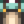

Rice
| Rice | |||||
| A basic grain often served under vegetables. | |||||
| Information | |||||
| Source | Mill • Pierre's • JojaMart | ||||
| Energy / Health |
|
||||
| Sell Price | |||||
| Crafting | |||||
| Equipment | |||||
| Processing Time | |||||
| Ingredients | |||||
- This article is about the cooking ingredient. For the harvested crop, see Unmilled Rice. For the seed, see Rice Shoot.
Rice is a cooking ingredient that can be used in a variety of recipes. It can be purchased for  200g at Pierre's General Store and for
200g at Pierre's General Store and for  250g at JojaMart.
250g at JojaMart.
Players have the ability to craft Rice from Unmilled Rice by using a Mill. Once placed in the mill, one Unmilled Rice will make one Rice. Unmilled Rice placed inside will appear as Rice in the box beside the Mill the next morning. The building can process an unlimited amount of rice per day.
Note: Rice made using the mill is profitable; it has a higher sell price than Unmilled Rice. Using Preserves Jars would be slightly more profitable per unit of Unmilled Rice if there is sufficient capacity, as the resulting pickles would sell for 110g. However, Rice can be further processed into Vinegar with a Keg, producing two Vinegar per Rice. As Vinegar sells for 100g each, this ultimately results in more profit than using Preserves Jars.
Recipes
Cooking
| Image | Name | Description | Ingredients | Energy / Health | Buff(s) | Buff Duration | Recipe Source(s) | Sell Price | |||
|---|---|---|---|---|---|---|---|---|---|---|---|
| Maki Roll | Fish and rice wrapped in seaweed. | N/A | N/A |
|
|||||||
| Rice Pudding | It's creamy, sweet, and fun to eat. | N/A | N/A |
|
|||||||
| Mango Sticky Rice | Sweet mango and coconut transforms this rice into something very special. |
|
Other
| Image | Name | Description | Ingredient | Equipment | Time | Sell Price |
|---|---|---|---|---|---|---|
| Vinegar | An aged fermented liquid used in many cooking recipes. | 600 minutes (5 hours) |
Gifting
| Villager Reactions
| |
|---|---|
| Dislike | |
Tailoring
Rice is used in the spool of the Sewing Machine to create the White Overalls. 
Quests
Rice is not used in any quests.
History
- 1.4: Added ability to make using unmilled rice in a Mill. Can now be used in Tailoring.
- 1.6: Can now be processed into vinegar in a keg.
| Ingredients | |
|---|---|
| Ingredients | Wheat Flour • Sugar • Rice • Oil • Vinegar |